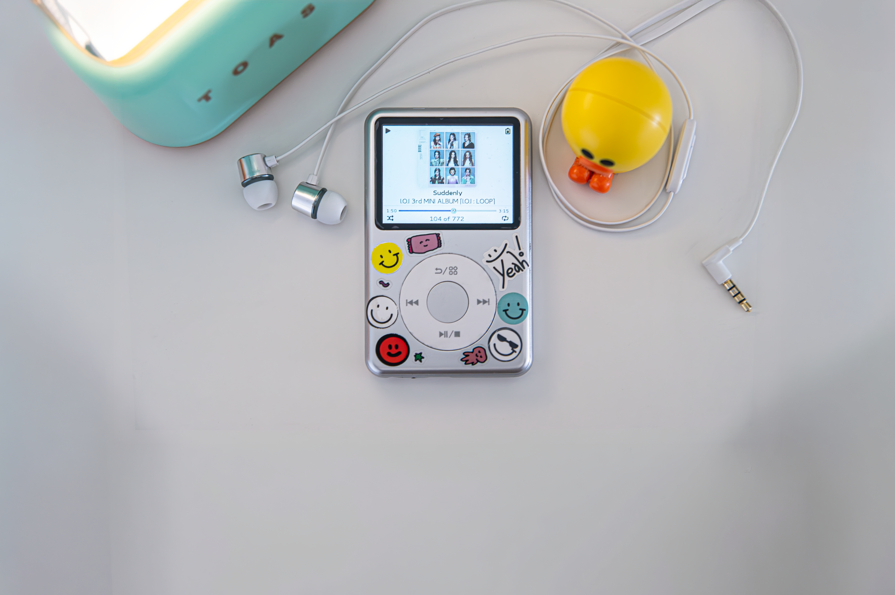
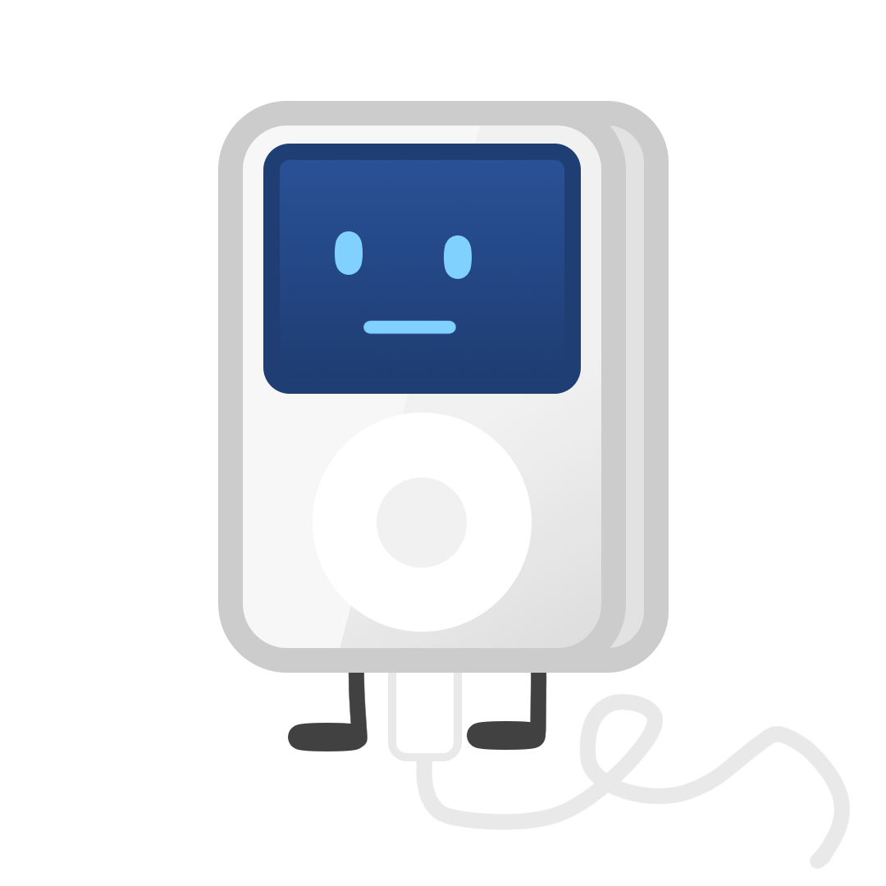
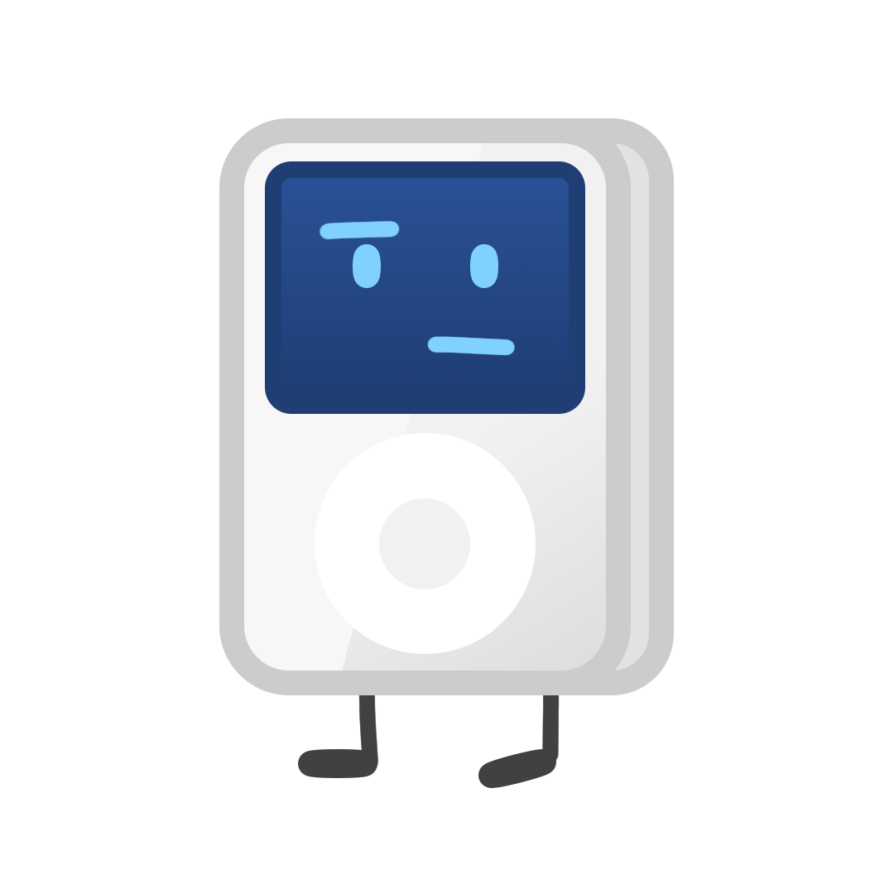
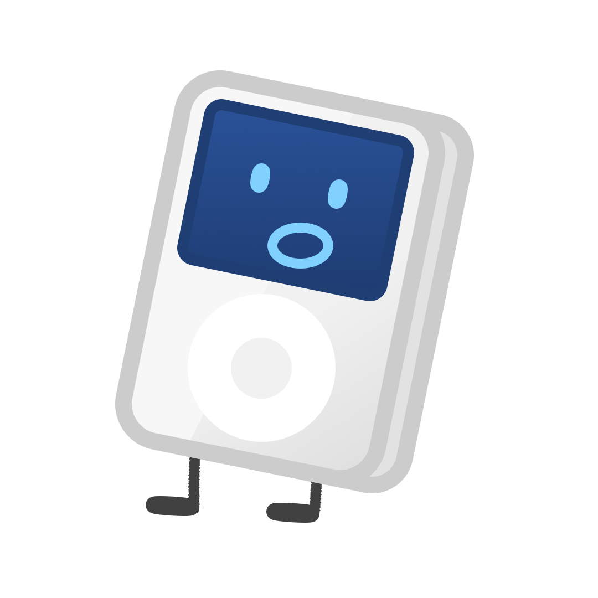

No battery drain
Android keeps a whole, dated phone operating system awake behind your music. We took it out and you get 2.5x the battery life.

Nugget for Y1 makes your Innioasis Y1 last longer, be faster and easier to use with Rockbox. Based on Linux, running Rockbox, it's stable and open.
It's really the same device??

Rockbox on Android
Stock firmware (Android)
With Nugget Y1!
Battery life is tested with AAC audio playing through wired earphones, volume at 50dB, WiFi and Bluetooth disabled. Visuals are an approximation. Battery hours are rounded up to the nearby value. Values may not be accurate and can fluctuate with variables.

Normally, Rockbox for the Y1 run as an app on top of Android 4.2.2. Why pick us?
Android keeps a whole, dated phone operating system awake behind your music. We took it out and you get 2.5x the battery life.
Power on and in under 10 seconds you're in. Power off or reboot right from the Rockbox menu.
The headphone amp runs at full strength, matching the stock maximum volume.
Save battery in power-saver mode or overclock for heavy stuff.
Natively supports iPod themes. Just adjust the screen size to Classic mode.
Every audio format, themes and fonts are supported.

We built a tool for Mac and Windows that automatically sets up everything. It's safe, check our source code.
The app will guide you through the process of flashing and set up everything automatically.
When you're done, you can adjust settings and download themes.
WARNING: Flashing replaces the stock firmware. While extremely rare, it can cause the malfunction of the device. We are not responsible of the damage to your device. Only the Y1 TypeA device is supported.
Or
Nugget for Y1 is now available in the Innioasis Updater CE.
Once the app is open and drivers are installed, select 'Nugget for Y1' in the software dropdown. The app will guide you through the process of flashing.
When flashing is complete, turn on Y1. You will see a screen telling you to plug in the device to the PC, do this.
Download the ZIP from our GitHub. Extract it to the Y1, making sure .rockbox is there.
When you're done, you can adjust settings and download themes.
Because this is our own stack of software, 100% feature parity is not certain.
Wifi, Bluetooth, Vibration, Internal Speaker, FM Radio
N/A
Nugget for Y1 is Hosted Rockbox running on a minimal Linux system, without an Android userspace, on the Innioasis Y1 (MediaTek MT6572, dual-core Cortex-A7).
lk load the Linux kernel (zImage) directly into an initramfs root filesystem./init process mounts /proc, /sys and /dev, powers on the MT6323 headphone amplifier through /dev/eac, enables the audio clocks and activates click wheel scanning. It then detects and mounts the physical microSD card, links user directories into /, initializes USB Mass Storage and executes /rockbox./dev/input/event0 to event15) mapped to the click wheel, touch buttons, volume keys and center switch. Dedicated keymap contexts exist for the pitch screen, the quick screen and menus./dev/eac with dynamic 44.1 kHz and 48 kHz switching, +12 dB analog gain and a logarithmic volume scale from -74 dB to +6 dB.vfat, exfat (SDXC, 256 GB and larger), ntfs and ext4, including multi-partition cards. PIVOT_ROOT presents the card as / to plugins..rockbox directory: A warning is shown on screen and USB Mass Storage remains active. Startup resumes once the directory is present on the card.| SoC | MediaTek MT6572, 2x Cortex-A7, 598 MHz to 1300 MHz, NEON, VFPv4 |
|---|---|
| Memory | 512 MB LPDDR2 |
| Display | 480x360 landscape, 32-bit ARGB8888 framebuffer (/dev/graphics/fb0, /dev/fb0), stride 1920 bytes |
| Audio | MT6323 PMIC codec and amplifier (/dev/eac), 44.1 kHz and 48 kHz dynamic sink clock |
| Primary storage | microSD partition 1 (/dev/block/mmcblk1p1 or raw mmcblk1), mounted at /mnt/sdcard and mapped to / |
| Additional partitions | Partition 2 at /mnt/extsd (Rockbox drive 1, <microSD1>), partition 3 at /mnt/extsd2, and so on |
| USB storage | Android USB Mass Storage gadget, LUN0 bound to the microSD card before enable |
| Boot image | Android ANDROID! header, 2048-byte pages. Kernel load address 0x10008000, ramdisk load address 0x11000000, MTK header magic 0x58881688 |
| Partition limit | BOOTIMG = 0x600000 (6,291,456 bytes) |
Cause: sound_set_volume passes the volume to the codec in centibels (-10 dB is -100). pcm-eac.c multiplied this value by 10 again, so reducing the volume by 1 or 2 dB produced silence. dummy_codec.c also compared centibels against -74, which muted output at -7.4 dB.
Resolution: The additional multiplication was removed, and audiohw_set_volume passes centibels directly to pcm_set_master_volume(). The mute threshold is -740, and dummy_codec.c compares against DUMMY_VOLUME_MIN * 10. The volume range is -74 dB to +6 dB in 1 dB steps. Analog headphone gain remains at +12 dB (0x0014).
Cause: sink_set_freq() receives an index into sink->caps.samprs (0 for 44.1 kHz, 1 for 48 kHz). The function switched on case 48000, which never matched, so the default of 44.1 kHz was always used. 48 kHz tracks played approximately 8.8% slower than normal.
Resolution: The index is translated with unsigned long sampr = (freq < HW_NUM_FREQ) ? hw_freq_sampr[freq] : freq; and the function switches on sampr. This configures the AFE DL1, IRQ MCU, I2S output and PMIC downlink registers for 48 kHz.
Location: Settings > General Settings > System > Advanced Key Lock.
Keymap: button_context_wps[] did not chain to CONTEXT_STD and therefore lacked standard actions such as ACTION_STD_KEYLOCK. It now ends with LAST_ITEM_IN_LIST__NEXTLIST(CONTEXT_STD). button_context_tree is chained to CONTEXT_LIST, and ACTION_LIST_VOLUP and ACTION_LIST_VOLDOWN are defined in button_context_standard.
Filtering: While locked, the following may be left enabled: volume (keys, and the wheel in the WPS), play and pause, and skip and seek. Changes apply immediately because selectivesoftlock_set_mask calls set_selective_softlock_actions on every toggle.
The Y1 has no hardware hold switch, so HOLD is implemented as a state machine on the center button. The button release that ends a lock or unlock operation is consumed and does not trigger a user interface action. Operation is described under Key lock operation below.
Button mapping for CONTEXT_PITCHSCREEN: the click wheel adjusts pitch in fine steps, the volume buttons in coarse steps, Left and Right nudge the value, Center toggles the mode and Menu exits.
ROCKBOX_NO_TEMP_SETTINGS_FILE causes settings to be written directly to config.cfg. An explicit sync() and the flush mount option commit settings and database updates to the card immediately.
Plugins are .rock shared libraries loaded through dlopen() and PROT_EXEC mmap. The card is mounted with fmask=0000,dmask=0000 so that the files have execute permission.
| Lock | Hold the Center button for 5 seconds. The display shows Key lock on. The release is consumed. |
|---|---|
| Unlock | Hold the Center button for 5 seconds until Click Center to unlock is displayed. Release it, then click Center once within 5 seconds. The display shows Key lock off. The click is consumed. |
| While locked | Single clicks and holds shorter than 5 seconds display Key lock on and leave the device locked. |
The installer tool performs these steps automatically. The manual procedure is provided for reference.
1. Prepare the microSD card. Format the card as FAT32 or exFAT and extract rockbox_sdcard.zip to the root of the card so that .rockbox is at the top level:
(microSD root)/
├── .rockbox/
│ ├── codecs/
│ ├── rocks/
│ ├── fonts/
│ ├── langs/
│ └── ...
└── Music/
2. Flash boot_rockbox.img.
!stock_rom/MT6572_Android_scatter.txt.BOOTIMG.BOOTIMG location to boot_rockbox.img.boot_rockbox.img | Flashable boot image containing the kernel and initramfs. Size: 5,976,064 bytes, leaving 315,392 bytes of headroom in the 6 MB BOOTIMG partition. |
|---|---|
rockbox_sdcard.zip | The .rockbox directory: codecs (MP3, FLAC, ALAC, AAC, Opus, DSD, WavPack), fonts, themes, and .rock plugins including Doom, Wolf3D, Duke3D, Quake, Rockboy, Chessbox and Sudoku. |
rockbox | Standalone ARMv7 hard-float Rockbox executable launched by /init. |